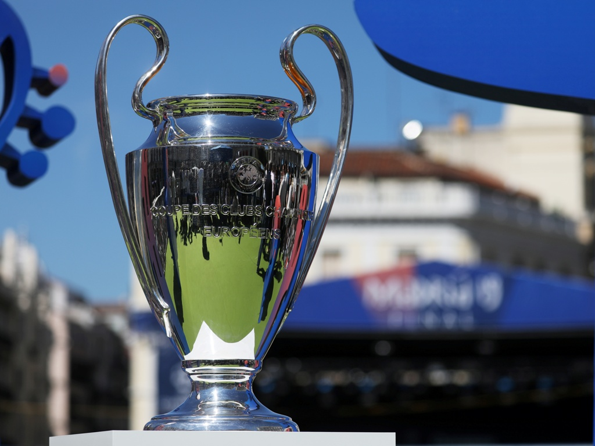

La Liga de Campeones de la UEFA, también conocida como Copa de Europa, es el torneo internacional oficial de fútbol más prestigioso a nivel de clubes en Europa. Organizado por su estamento continental, la UEFA, se inaguro en 1955.
| EQUIPO | COPAS |
|---|---|
| Real Madrid (ESP) | 14 |
| Milan (ITA) | 7 |
| Bayern Munich (ALE) | 6 |
| Liverpool (ING) | 6 |
| Barcelona (ESP) | 5 |
| Ajax (HOL) | 4 |
| Inter (ITA) | 3 |
| Manchester United (ING) | 3 |
| Juventus (ITA) | 2 |
| Benfica (POR) | 2 |
| Porto (POR) | 2 |
| Chelsea (ING) | 2 |
| Nottingham Forest (ING) | 2 |
| Celtic (ESC) | 1 |
| Hamburger (ALE) | 1 |
| Steua Bucarest (RUM) | 1 |
| Olympique de Marsella (FRA) | 1 |
| Borussia Dortmund (ALE) | 1 |
| Feyenoord (HOL) | 1 |
| Aston Villa (ING) | 1 |
| PSV (HOL) | 1 |
| Estrella Roja (SRB) | 1 |
| AÑO | EQUIPO |
|---|---|
| 2021/22 | Real Madrid (14) |
| 2020/21 | Chelsea (2) |
| 2019/20 | Bayern Munich (6) |
| 2018/19 | Liverpool (6) |
| 2017/18 | Real Madrid (13) |
| 2016/17 | Real Madrid (12) |
| 2015/16 | Real Madrid (11) |
| 2014/15 | Barcelona (5) |
| 2013/14 | Real Madrid (10) |
| 2012/13 | Bayern Munich (5) |
| 2011/12 | Chelsea (1) |
| 2010/11 | Barcelona (4) |
| 2009/10 | Inter (2) |
| 2008/09 | Barcelona (3) |
| 2007/08 | Manchester United (3) |
| 2006/07 | Milan (7) |
| 2005/06 | Barcelona (2) |
| 2004/05 | Liverpool (5) |
| 2003/04 | Porto (13) |
| 2002/03 | Milan (6) |
| 2001/02 | Real Madrid (9) |
| 2000/01 | Bayern Munich (4) |
| 1999/00 | Real Madrid (8) |
| 1998/99 | Manchester United (2) |
| 1997/98 | Real Madrid (7) |
| 1996/97 | Borussia Dortmund (1) |
| 1995/96 | Juventus (2) |
| 1994/95 | Ajax (4) |
| 1993/94 | Milan (5) |
| 1992/93 | Olympique de Marsella (1) |
| 1991/92 | Barcelona (1) |
| 1990/91 | Estrella Roja (1) |
| 1989/90 | Milan (4) |
| 1988/89 | Milan (3) |
| 1987/88 | PSV (1) |
| 1986/87 | Porto (2) |
| 1985/86 | Steua Bucarest (1) |
| 1984/85 | Juventus (1) |
| 1983/84 | Liverpool (4) |
| 1982/83 | Hamburger (1) |
| 1981/82 | Aston Villa (1) |
| 1980/81 | Liverpool (3) |
| 1979/80 | Nottingham Forest (2) |
| 1978/79 | Nottingham Forest (1) |
| 1977/78 | Liverpool (2) |
| 1976/77 | Liverpool (1) |
| 1975/76 | Bayern Munich (3) |
| 1974/75 | Bayern Munich (2) |
| 1973/74 | Bayern Munich (1) |
| 1972/73 | Ajax (3) |
| 1971/72 | Ajax (2) |
| 1970/71 | Ajax (1) |
| 1969/70 | Feyenoord (1) |
| 1968/69 | Milan (21) |
| 1967/68 | Manchester United (1) |
| 1966/67 | Celtic (1) |
| 1965/66 | Real Madrid (6) |
| 1964/65 | Inter (2) |
| 1963/64 | Inter (1) |
| 1962/63 | Milan (1) |
| 1961/62 | Benfica (2) |
| 1960/61 | Benfica (1) |
| 1959/60 | Real Madrid (5) |
| 1958/59 | Real Madrid (4) |
| 1957/58 | Real Madrid (3) |
| 1956/57 | Real Madrid (2) |
| 1955/56 | Real Madrid (1) |